Orca Slicer este un program de slicing ușor de folosit. Funcționează ca un intermediar între modelul 3D și printer: transformă orice model digital în obiecte reale, layer cu layer, cu precizie.
Ghidul trece în revistă cele mai utile funcții din Orca Slicer: actualizarea programului, adăugarea de suporturi, editarea G-code-ului, scalarea modelelor, schimbarea vitezei de printare, schimbarea dimensiunii duzei, tăierea și unirea obiectelor, adăugarea unei pauze în timpul printării și exportul setărilor.
Cum funcționează Orca Slicer
Orca Slicer analizează modelul 3D și îl taie în multe layere orizontale subțiri. Layerele sunt apoi convertite într-un limbaj pe care printerul îl înțelege, numit G-code. Programul generează un G-code optimizat, cu instrucțiuni detaliate despre cum se mișcă nozzle-ul, cât filament se consumă, ce temperaturi se folosesc și așa mai departe.
Pentru a evita erorile de printare, programul afișează previzualizarea G-code-ului pentru fiecare layer după slicing. Poți ajusta Layer height, Speed, Supports și alte setări pentru printuri de calitate. Când setările sunt bune, exporți fișierul G-code și îl trimiți la orice model de printer, prin card SD, USB sau Wi-Fi.
Cum actualizezi Orca Slicer
Pentru a menține calitatea printării, folosește întotdeauna cea mai recentă versiune a programului. Iată cum îl actualizezi.
Verifică versiunea curentă
- Înainte de actualizare, află ce versiune ai acum.
- Deschide secțiunea
HelpsauAbout, unde este afișată versiunea. Compar-o cu ultima versiune disponibilă pe site sau în repository-ul GitHub.
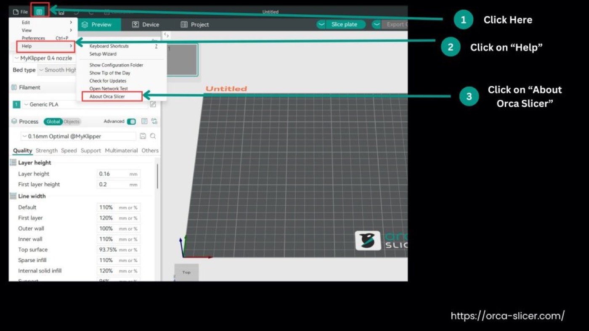
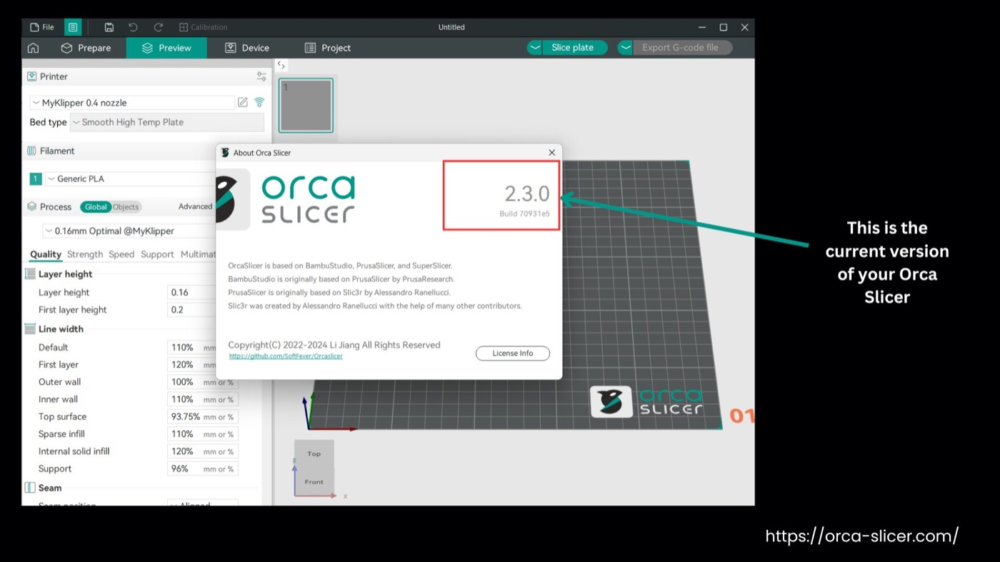
Fă o copie de siguranță a setărilor
- Înainte de a actualiza orice program, o copie de siguranță este cea mai bună metodă de a-ți păstra datele.
- În bara de instrumente, apasă
File, apoi opțiuneaExport, pentru a genera un fișier de backup. - Salvează întotdeauna fișierul de backup într-un loc sigur, din care să poți restaura ușor.
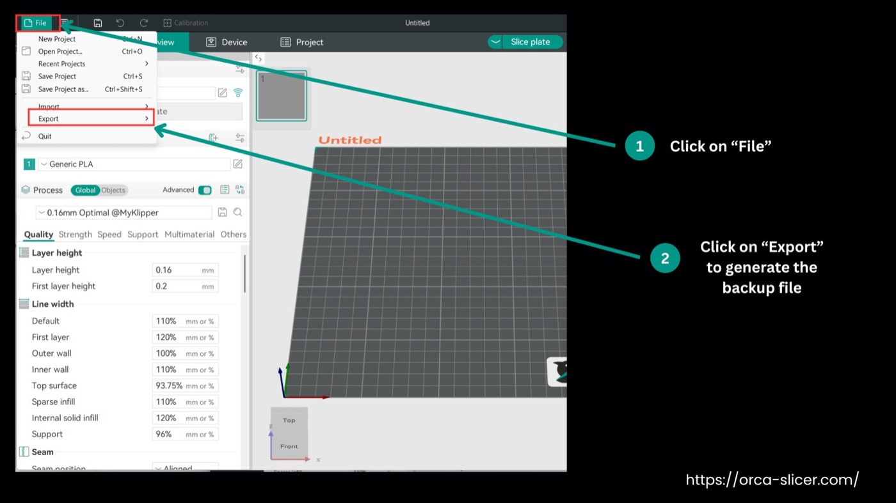
Descarcă ultima versiune
- Intră pe site pentru a descărca ultima versiune de Orca Slicer pentru sistemul tău (Windows, Mac sau Linux).
- Poți verifica versiunea și pe pagina oficială Orca Slicer GitHub Releases.
Instalează actualizarea
- Închide Orca Slicer înainte de instalare.
- Găsește fișierul descărcat și fă dublu-click pe el. Instalarea pornește automat.
- Urmează instrucțiunile de pe ecran până la instalarea și pornirea programului.
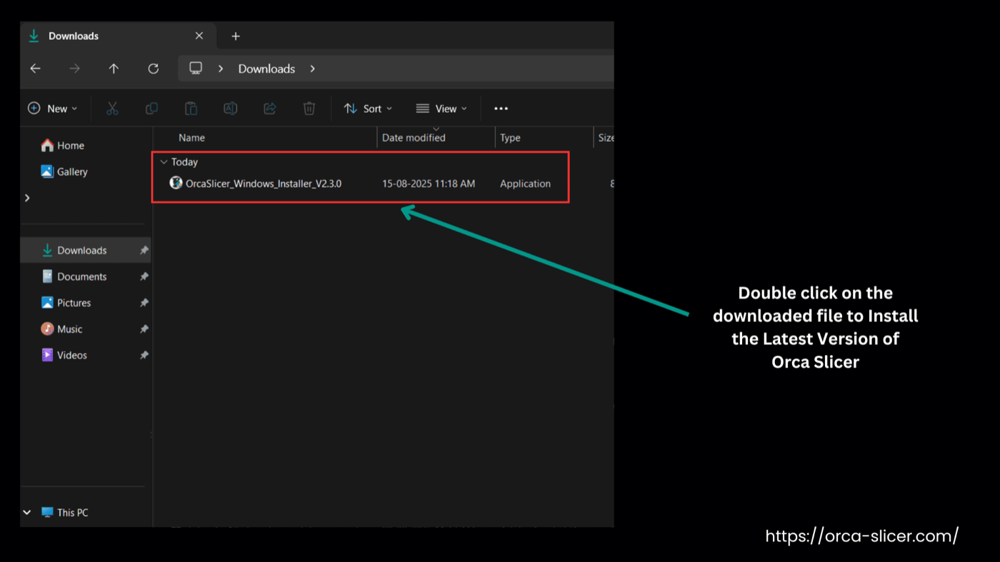
Verifică actualizarea
- Dacă vrei să confirmi că ai instalat ultima versiune, verifică din nou în secțiunea
AboutsauHelp. - Verifică faptul că funcțiile noi anunțate merg și că bug-urile au fost eliminate.
Restaurează backupul
- Dacă ai nevoie de datele salvate, le poți restaura din
File, apoi dinImport.
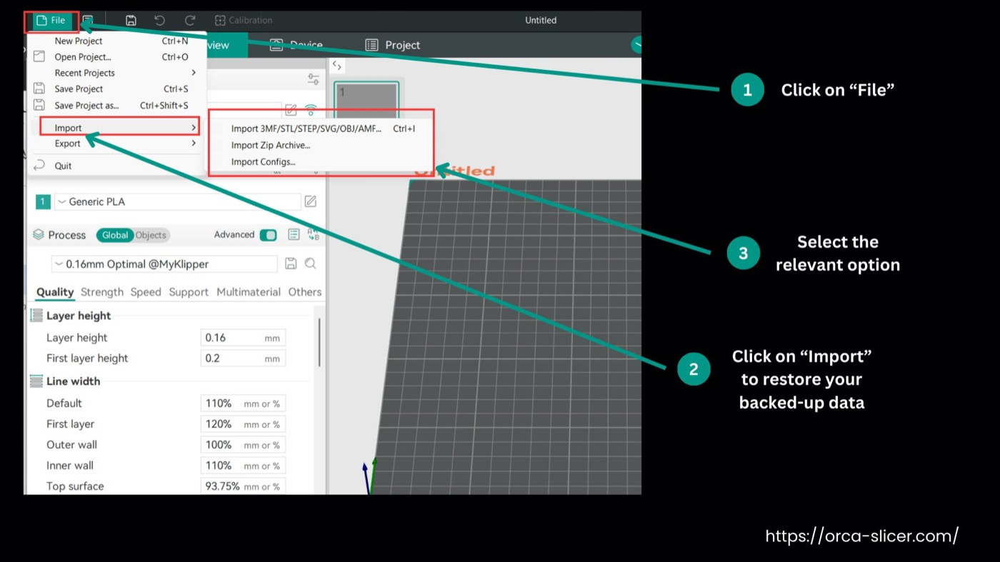
Cum editezi G-code în Orca Slicer
Poți edita G-code-ul pentru a personaliza printerul și a obține printuri de calitate mai bună. Înainte de editare, fă un backup al datelor și testează G-code-ul modificat pe un print mic.
Iată cum se editează:
Metoda 1 — Editează G-code-ul de start sau de final în Orca Slicer
- Deschide Orca Slicer și mergi la
Printer Settings, apoi laCustomize G-code. - Aici poți modifica scripturile de start ale
G-code-ului: încălzireanozzle-ului sau ducerea capului la origine (homing) înainte de începerea printului. Poți seta și comenzi după terminarea printului, de exemplu retragereanozzle-ului sau oprirea încălzirii.
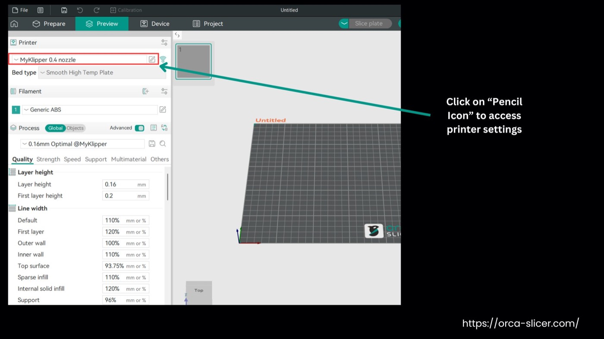
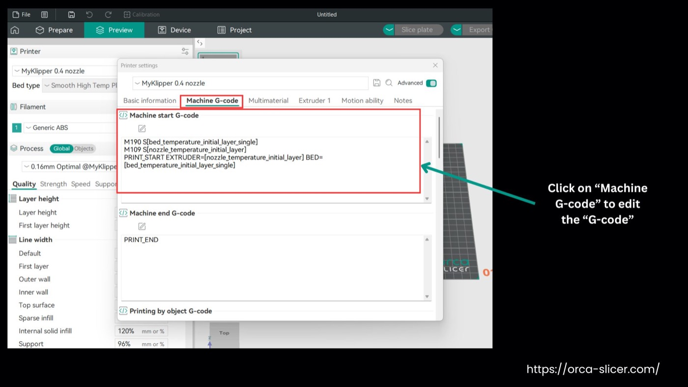
Metoda 2 — Editează fișierul G-code salvat
- Fă slicing modelului ca de obicei.
- Mergi la tabul
Preview, apoi alegeExport G-code. - Deschide fișierul
G-codesalvat cu un editor de text, cum ar fi Notepad++ sau VS Code. - Acum poți edita sau adăuga comenzi:
M25→ pauză la print;M104 S210→ temperaturanozzle-ului la 210 °C;M106 S255→ ventilatorul la viteză maximă.
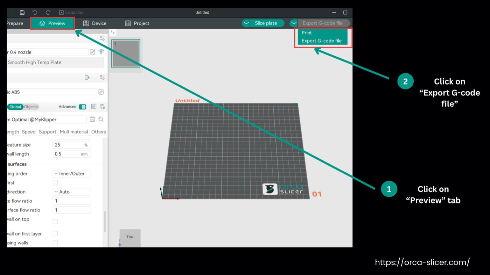
Metoda 3 — Adaugă comenzi la un layer anume
- În
G-code-ul exportat, caută o linie de forma:LAYER:10. - Adaugă comanda imediat după ea, ca să ruleze la acel layer.
Cum micșorezi sau scalezi în Orca Slicer
Micșorarea sau scalarea este necesară când modelul este prea mare ori prea mic pentru printer. Îl poți redimensiona ușor în Orca Slicer, astfel:
- Deschide Orca Slicer și încarcă modelul pe care vrei să îl redimensionezi. Apasă pe model ca să îl selectezi. Dimensiunea se modifică cu instrumentul
Scaledin bara laterală. - Scrie un procent pentru a seta dimensiunea. Pentru micșorare, folosește un număr sub 100%; pentru mărire, un număr peste 100%. Poți trage și de mânerele de scalare pentru ajustare vizuală.
- Dacă vrei să modifici toate laturile împreună, activează
Uniform Scaling. Dezactivează-l ca să modifici separat lățimea, înălțimea sau adâncimea. Verifică înPreviewcă modelul încape pe pat și arată corect. Când ești mulțumit, fă slicing și exportăG-code-ul.
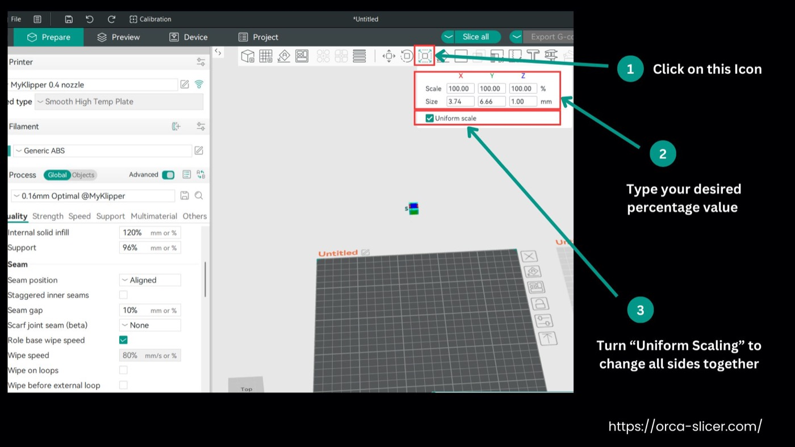
Cum schimbi viteza de printare
Deschide modelul în Orca Slicer și treci la tabul Print Settings. Derulează până la secțiunea Speed sau caut-o. Aici poți ajusta vitezele pentru fiecare parte a printului:
Perimeters: pereții exteriori și interiori. Unii utilizatori le setează mai încet pentru calitate mai bună, de exemplu 25 mm/s dacăinfill-ul este 50 mm/s.Infill: structura internă. De obicei este mai rapid decât pereții, de exemplu 50 mm/s în exemplul de mai sus.Supports: materialul de suport. Poți folosi viteza deinfillsau o valoare ceva mai mică, dacă detaliile contează.Travel: mișcările fără extrudare. De obicei pot rămâne rapide.
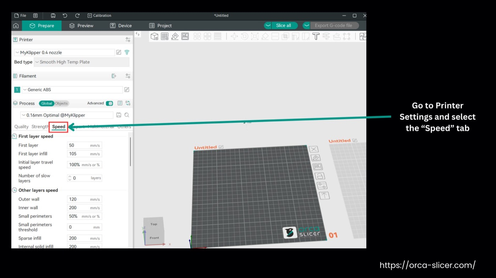
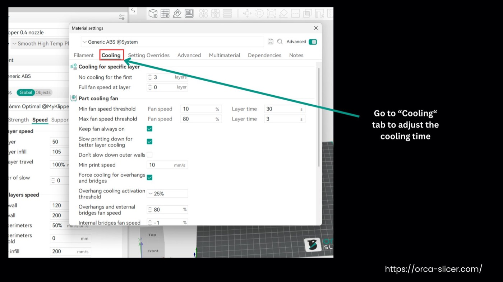
Reține că Orca poate reduce automat viteza la layerele foarte mici, ca să le dea timp să se răcească. Ajustarea se face din Cooling → Minimum Layer Time. Dacă hot end-ul nu topește filamentul suficient de repede, Orca limitează viteza după maximum volumetric flow din profilul printerului. Verifică această valoare dacă vitezele nu par să corespundă setărilor.
În final, viteza reală a printerului este limitată de accelerație. Dacă accelerația este mică, printerul nu atinge viteza setată, mai ales la mișcările mici sau scurte.
Cum schimbi dimensiunea duzei
În Orca trebuie să schimbi destul de des dimensiunea duzei. Pentru un model fin, cu multe detalii, reduci dimensiunea; pentru printare rapidă, o mărești. Dimensiunile uzuale merg de la 0,2 mm — printare lentă, dar calitate fină — până la 0,8 mm, pentru printuri rapide, cu pierdere de detalii.
Acum că știi de ce contează dimensiunea duzei, iată cum o schimbi:
- Pornește Orca Slicer și deschide
Printer Profile. - Mergi la
Printer Settingsși, la opțiuneaNozzle Diameter, alege dimensiunea dorită din listă. ApasăSavepentru a păstra modificările.
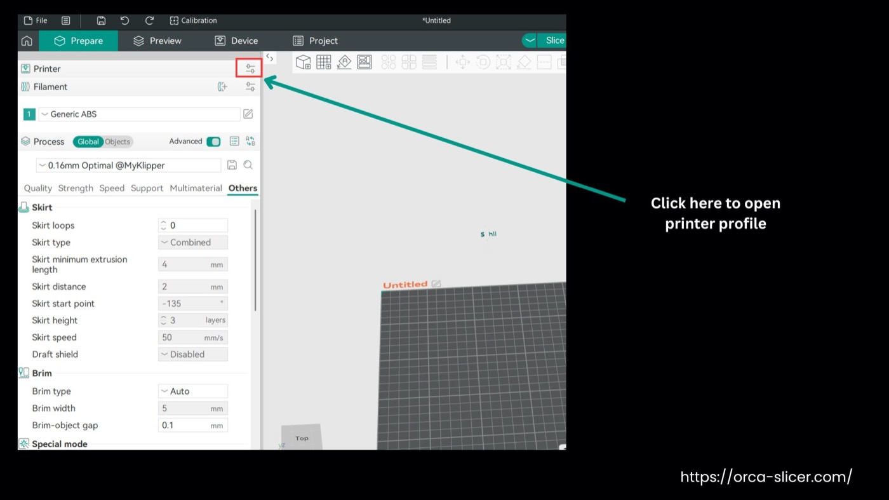
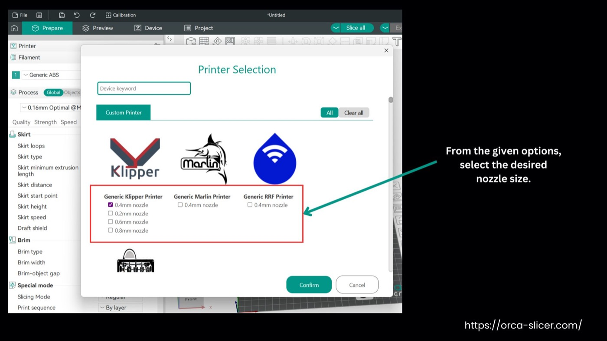
După ce schimbi duza, reglează Layer height, Speed și extrusion ca să corespundă. Dacă sari peste acest pas, poți pierde și calitate, și viteză.
Cum tai un model în Orca Slicer
Iată cum tai modelul cu precizie în acest program de slicing. Afli și cum să adaugi conectori, ca piesele să se îmbine prin click sau prin lipire.
Deschide Orca Slicer
- Primul pas este să deschizi Orca Slicer.
Adu modelul
- Importă modelul în slicer. Orca Slicer se actualizează des, așa că interfața poate arăta diferit în funcție de versiune.
- În versiunile mai vechi exista un buton dedicat pentru tăiere. În versiunile noi a fost înlocuit cu scurtături.
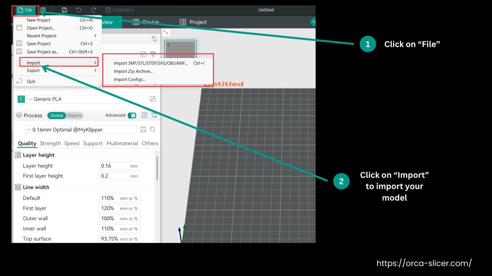
Deschide funcția de tăiere
- Selectează modelul apăsând pe el. Apoi ține
Shift + Cpentru a deschide funcția de tăiere. Programul taie automat modelul în două. - Uită-te la linia de tăiere. Dacă nu pare ideală, apasă pe controalele de axă și mută planul de tăiere. Poate fi nevoie să încerci câteva axe. După ce ai găsit axa potrivită, ridică tăietura deasupra brațelor.
- Dacă linia ajunge într-un loc incomod, ajustează poziția și unghiul cu celelalte controale de axă, până ești mulțumit.
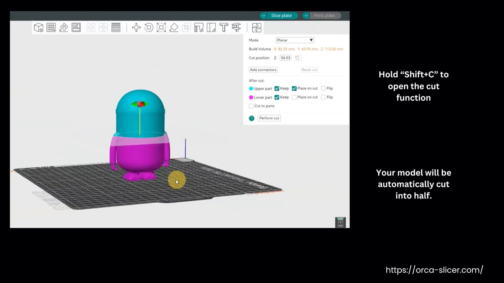
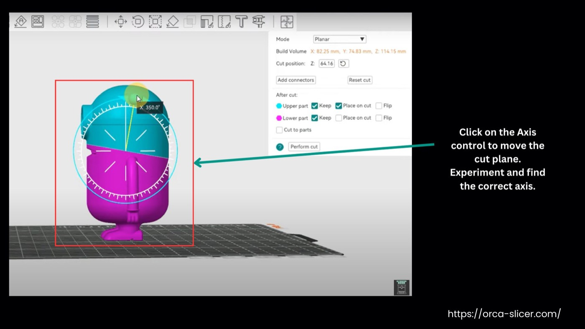
Adaugă conectori
- Apasă opțiunea
Connectorsdacă vrei să adaugi conectori. Apasă acolo unde vrei să fie plasați. Poți modifica dimensiunea din valori sau trăgând sliderul. O adâncime mai mare înseamnă o îmbinare mai rezistentă. Poți schimba și forma conectorului, de exemplu în hexagon, pentru rezistență suplimentară. - Când setările sunt bune, apasă
Confirm Connectors. Modelul apare din nou întreg, dar conectorii rămân aplicați în interior.
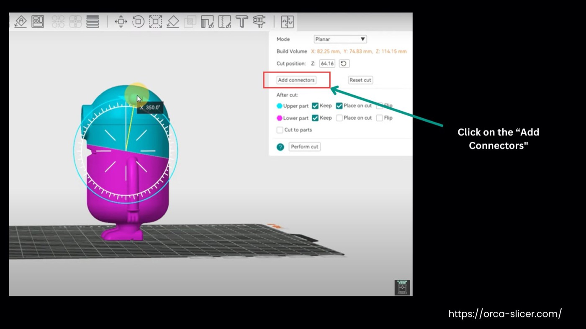
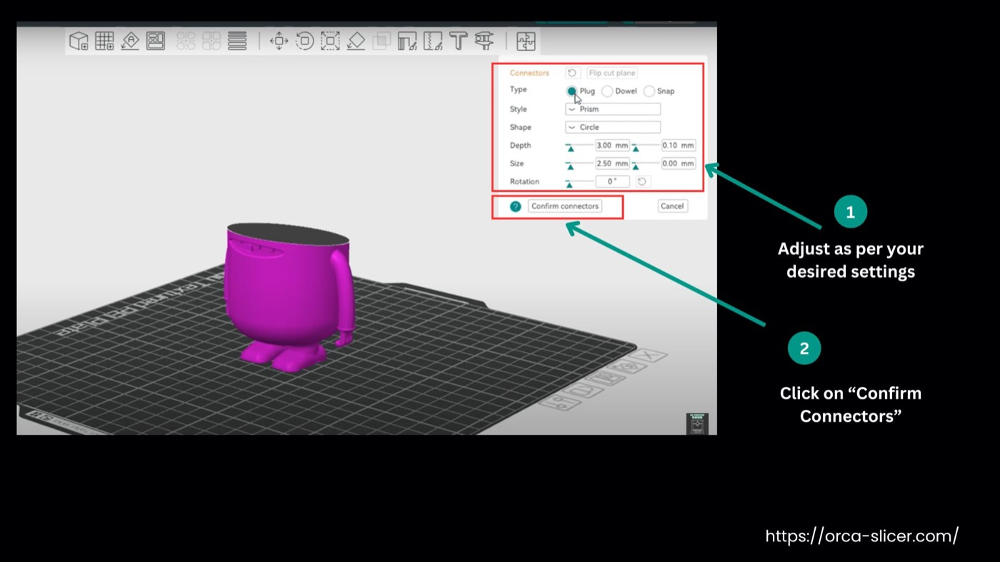
Execută tăierea
- Apasă
Perform Cut. Vei vedea două modele separate, tăiate exact acolo unde ai poziționat planul. Este util pentru printarea modelelor mari în bucăți mai mici sau pentru proiecte multicolor.
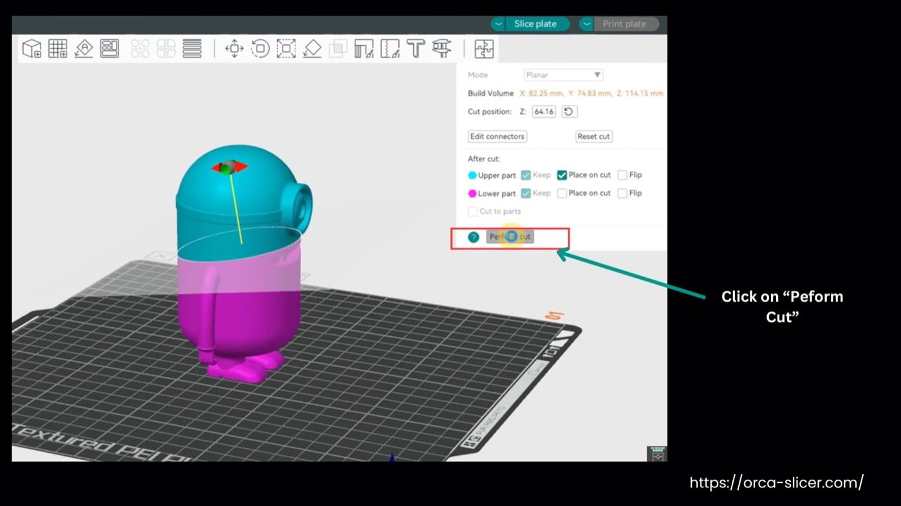
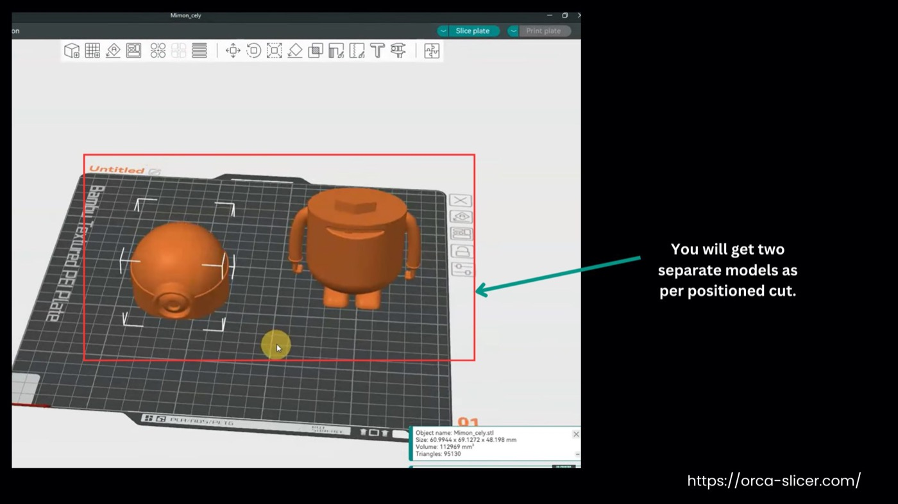
Așa tai un model în mai multe părți în Orca Slicer și adaugi conectori pentru a le îmbina.
Cum unirești obiecte în Orca Slicer
Orca Slicer preia funcția de unire a obiectelor de la Bambu Studio. Îți permite să tratezi mai multe modele ca o singură piesă la printare.
Importă toate părțile pe care vrei să le unești și poziționează-le prin mutare, rotire sau aliniere. Selectează toate modelele poziționate. Ține Ctrl și apasă pe fiecare, sau alege-le din lista de obiecte.
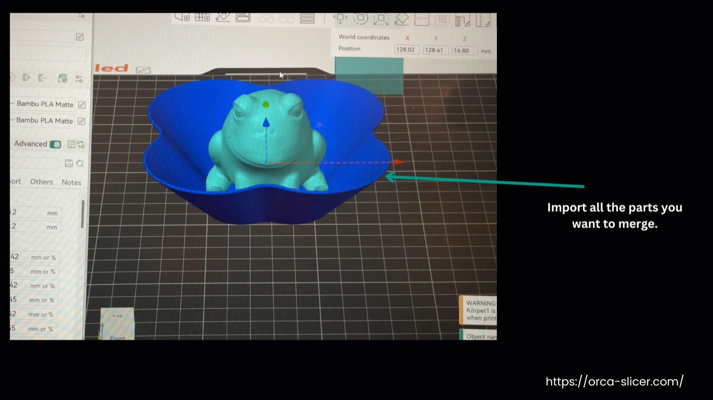
Apoi apasă click dreapta și alege Assemble. După aceea, Orca Slicer le tratează ca pe un singur model la slicing, dar poți muta sau ajusta fiecare piesă dacă este nevoie.
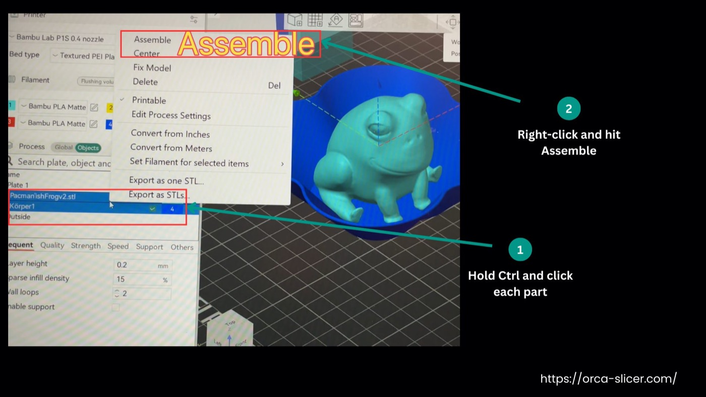
Următorul pas este combinarea modelelor într-o singură rețea solidă (mesh) pentru printare. Alege Assembly (în stânga sus), mergi la Mesh Boolean → Union, selectează fiecare parte și apasă Union. Poate dura câteva secunde, dar la final obiectele sunt complet combinate și gata de slicing ca de obicei.
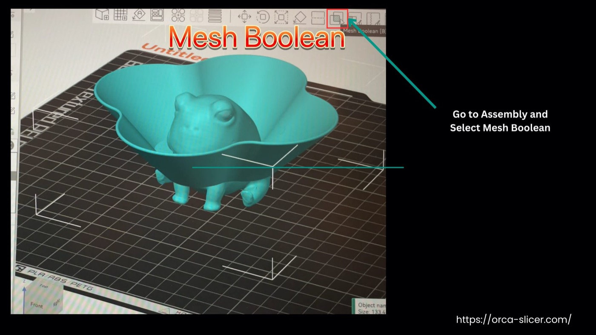
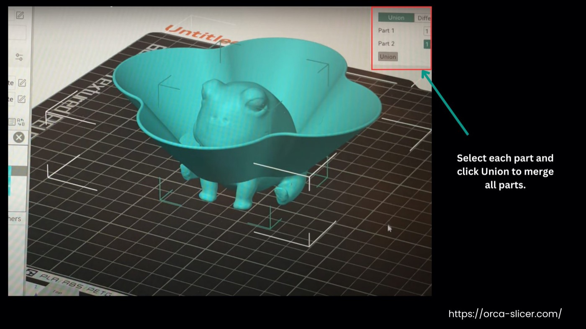
Acest procedeu este util dacă printezi modele mari din bucăți sau vrei să combini piese mici într-un singur print. Asigură-te că modelele se suprapun puțin sau se ating, ca să se unească. Atât: ai obiectele unite, gata de slicing și printare ca un singur model solid.
Cum adaugi o pauză în Orca Slicer
Adaugi o pauză în Orca când vrei să faci modificări în timpul printului. Deschide Orca Slicer și încarcă fișierul. După ce fișierul este complet și gata de print, mergi la tabul Preview și examinează layerele de jos în sus.
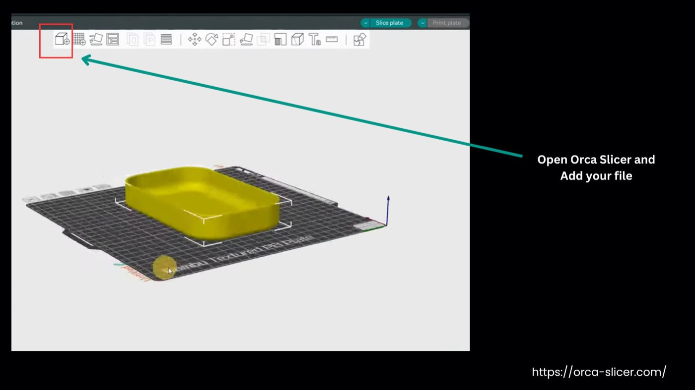
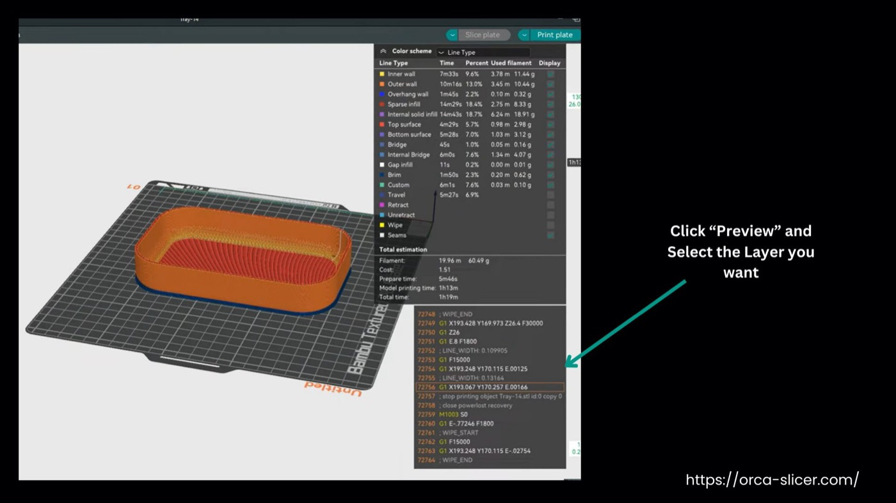
Stabilește din Preview la ce layer trebuie adăugată pauza, de exemplu la schimbarea culorii filamentului sau la inserarea unui obiect. După ce identifici layerele, apasă click dreapta pe layer și alege Add Pause.
Următorul pas este să apeși Slice Plate în colțul din dreapta, pentru a face din nou slicing și a adăuga G-code-ul pentru pauză. După slicing, revino în Preview ca să verifici că pauza este pusă. G-code-ul va arăta comanda de pauză la layerul specificat.
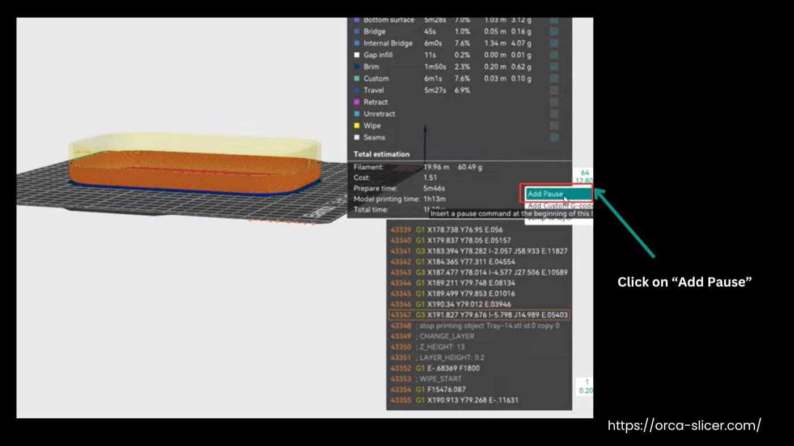
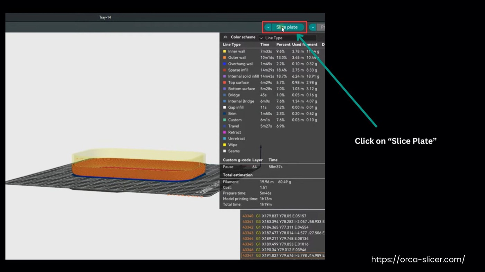
Modelul este acum gata de print, cu pauza inclusă, ca să poți face modificări în timpul printării.
Cum adaugi suporturi în Orca Slicer
Ghidul original include aici un tutorial video pentru adăugarea suporturilor personalizate în Orca Slicer. Îl poți urmări direct în pagina originală.
Cum exporți setările Orca Slicer
Dacă ai ajustat profiluri de printer sau de print, exportul setărilor din Orca Slicer îți permite să păstrezi un backup, să le dai mai departe sau să le muți pe alt calculator.
1. Deschide Orca Slicer
- Pornește Orca Slicer pe calculator.
2. Deschide meniul de export
- În colțul din stânga sus, apasă
File, apoi alegeExportși selecteazăExport Preset Bundledin meniu.
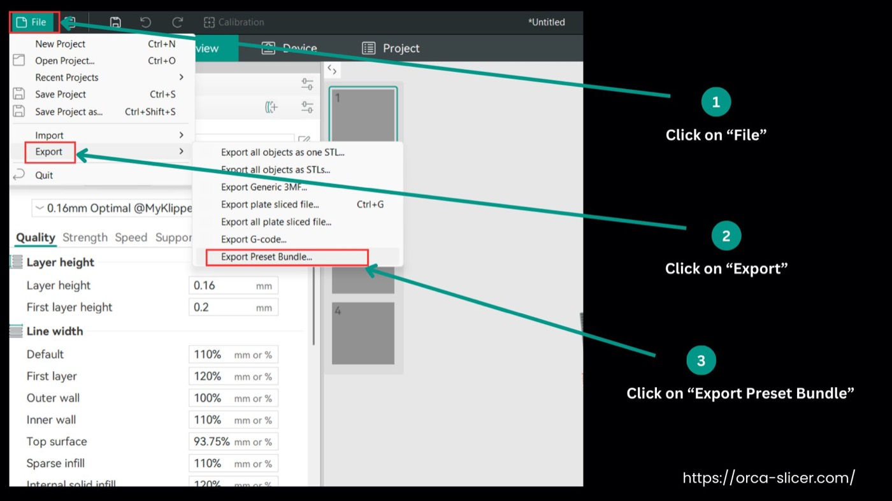
3. Alege ce exporți
Apare o fereastră cu mai multe opțiuni:
Printer config bundle (.orca_printer): exportă toată configurația printerului, inclusiv configurări personalizate de printer, filamente conectate și profiluri de print.Filament bundle (.orca_filament): exportă profilurile de filament personalizate, împreună cu legăturile către printere.Printer presets (.zip): exportă configurările personalizate de printer.Filament presets (.zip): exportă configurările personalizate de filament.Process presets (.zip): exportă profilurile de print personalizate (process presets).
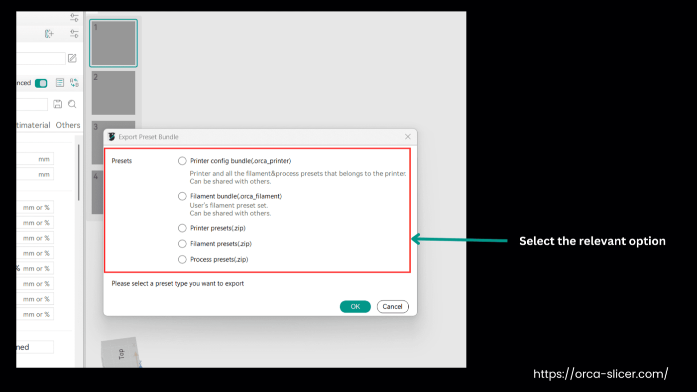
Alege opțiunea care corespunde cu ce vrei să exporți.
4. Selectează presetările de exportat
- După ce ai ales tipul de export, parcurge lista de configurări și bifează presetările pe care vrei să le salvezi.
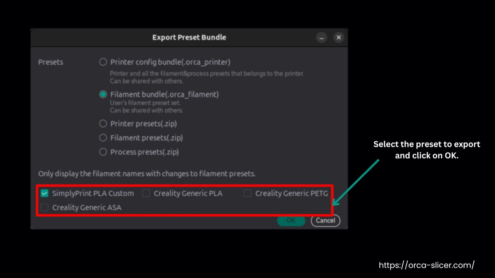
5. Salvează fișierul exportat
- Apasă
OKși alege un folder în care vei găsi ușor fișierul mai târziu. Dă-i un nume și salvează.
În concluzie
Orca Slicer acoperă ajustarea, unirea, pauzarea și reglajul fin al fiecărui print. Cu explicațiile din acest ghid, ai o direcție clară pentru printuri de calitate.